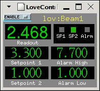
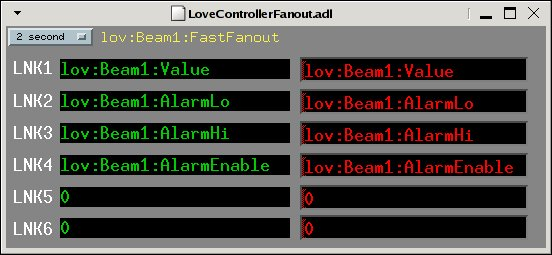
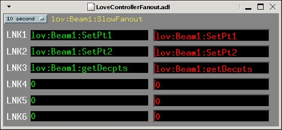

love: Love Controller Driver Support
Release 3-2-3
David Kline
June 2006
License Agreement
This product is available via the open
source license described at the end of this document.
Overview
This module is part of synApps to provide support for the Love
Controllers. It consists of MEDM screens, an Asyn-based multi device
port driver, and a database. The MEDM screens provide a way for
viewing the controller values as well as controlling some of its
configuration. The port driver binds generic Asyn device support for
EPICS records with the Asyn serial port driver (drvAsynSerialPort).
The database defines EPICS records, that read/write controller values
and configuration settings.
The Love Controller is an
instrument that can be used to monitor temperature, pressure, serve
as a thermocouple, or control pressure, flow, humidity, motion, or pH
given the proper hardware. The control functions, such as selecting
the input type (voltage, current, etc.), are programmed from the
front panel. Communication with the controller is a half-duplex,
multi drop, RS-485 serial bus. Refer to the documentation for
additional information about the features and programmability of the
instrument. There are several controller models available providing
different options and features, however, this software supports
models 16A and 1600.
Files
The files listed below are the primary ones in the
identified directory.
|
.
|
|
start_epics_love
|
Main MEDM screen startup.
|
|
./documentation
|
|
devAsynLoveCrossTraining.ppt
|
Power point presentation given during a BCDA group meeting.
|
|
devAsynLove.ppt
|
Power point presentation given during the EPICS collaboration
meeting in Spring of 2005 (click
here).
|
|
loveDriver.html
|
This document.
|
|
loveKnownIssues.html
|
List of known issues for each release.
|
|
loveReleaseNotes.html
|
Notes for current and previous releases.
|
|
WIRING
|
Diagram for wiring the controllers and other information.
|
|
./documentation/1600
|
|
1600_Calibration.pdf
|
Calibration document for the 1600.
|
|
1600_CommProtocol.pdf
|
Communication protocol/commands for the 1600.
|
|
1600_Documentation.pdf
|
Users manual.
|
|
./documentation/16A
|
|
16A_Calibration.pdf
|
Calibration document for the 16A.
|
|
16A_CommDoc.pdf
|
Communication protocol/commands for the 16A.
|
|
16A_CommProtocol.pdf
|
Instructions about how to write your own application to
communicate with the 16A.
|
|
16A_DataSheet.pdf
|
General information.
|
|
16A_Documentation.pdf
|
Users manual.
|
|
16A_FlowChart.pdf
|
Programming flow chart.
|
|
./documentation/485LDRC
|
|
485LDRC_Connections.gif
|
Wiring diagram.
|
|
485LDRC_Datasheet.pdf
|
General information.
|
|
485LDRC_Dimentions.gif
|
Installation diagram.
|
|
./iocBoot/ioclove
|
|
st.cmd.linux
|
Startup script for Linux-based IOCs.
|
|
st.cmd.vx
|
Startup script for vxWorks-based IOCs.
|
|
./loveApp/Db
|
|
LoveControllerControl.db
|
PVs for setting controller configuration.
|
|
LoveController.db
|
PVs for reading information from the controller.
|
|
Love_settings.req
|
Request file for auto save/restore.
|
|
./loveApp/op/adl
|
|
LoveController.adl
|
Main read back screen.
|
|
LoveControllerControl.adl
|
Displays additional read back and configuration information.
|
|
LoveControllerFanout.adl
|
Displays PV and rate information.
|
|
./loveApp/src
|
|
drvLove.c
|
Asyn-based multi device port driver.
|
|
loveAppCommonInclude.dbd
|
Basic database definition from base, Asyn, and for Love
controller support.
|
|
loveAppInclude.dbd
|
Primary database definition file.
|
|
loveAppVXInclude.dbd
|
vxWorks-specific database definition file.
|
|
devLove.dbd
|
Necessary for other components to import Love Controller
support.
|
MEDM Screens
When the script 'start_epics_love' is executed, the main
controller screen is displayed (see below). It displays the values
that are of most interest to the user. These values include the read
back, set points, alarm limits, and indicates whether the controller
is in alarm. The 'ENABLE' menu provides a means for
disabling/enabling record processing. When disabled the records will
not be processed and no data acquisition will be performed.

A
hidden menu is available in the upper right hand corner of the main
screen. It displays additional values, such as input type and
communication status, as well as allows one to make adjusts to some
of the configuration parameters (i.e. set point 1 and scan rate). The
display is illustrated below.

Additionally,
the “Fast Fanout” or “Slow Fanout” message
buttons launch other screens that list which PVs are being acquired
and at what rate. The user can enter additional PVs or change the
data acquisition rate. Furthermore, it should be noted that once the
IOC is rebooted, the fanout records will be reset to the original
PVs. These displays are illustrated below. The corresponding database
records require modification to preserve any changes made at runtime.


drvLove
The drvLove is a multi device port driver that binds standard
EPICS device support with the underlying serial bus. It allows a
virtual connection to an individual controller to provide a means for
debugging the communication. The asynRecord can be used to select the
tracing masks for debugging communication.
The driver
implements the asynDrvUser, asynCommon, asynInt32, and
asynUInt32Digital interfaces.
asynDrvUser – Describes the
methods to allow an asynUser to communicate user specific
information to/from the port driver.
asynCommon – Describes the
methods that must be implemented by drivers for reporting driver
information and how to connect or disconnect from the driver.
asynInt32 – Describes the
methods that use integers for communicating with a device.
asynUInt32Digital –
Describes the methods for communicating via bits of an Int32
register.
Database
The database consists of
records for processing data received by the controllers. Records are
categorized as base, composite, and rate. Base records provide
integer-based values that are read from a controller and include
values such as the number of decimal points, set point 1 and 2, alarm
high and low, and status. Composite records take as input base
records to derive floating point representations of the values. For
example, set point 1 is a calc record that receives as input the
decimal points and the set point record values, then uses its CALC
equation to determine the final floating point set point value. By
default, both the base and composite records are process passive and
are processed using fanout records. The fanout records are used to
“drive” the processing rate of the base and composite
records. At the moment there are two fanout records for fast and slow
record processing, their scan rates can be adjusted from MEDM screens
. Note that the “getDecpts” PV must be in the
“Fast” fanout record at all times. This value is required
since it is used by many PVs to derive their floating point value.
Operation
The driver is initialized during IOC startup by calling the
drvLoveInit method passing the driver name (i.e. “LO”)
and the name of the serial port. The initialization method first
connects with the serial port name and finds the asynOctet interface.
Then it registers the port driver name with Asyn and the interfaces
it supports (i.e. asynDrvUser, asynCommon, asynInt32, and
asynUInt32Digital). The port driver must be made aware of the
controller models on the serial bus. To do this the startup script
calls the drvLoveConfig method passing the port driver name (i.e.
“LO”), the controller address (i.e. 1..256), and the
controller model string (i.e. “16A” or “1600”).
After this, the database can be loaded creating the record instances
that support the controllers.
Prior to initializing the
driver, Asyn and the underlying serial bus must be initialized. Refer
to the target-specific startup script located in the iocBoot
directory for details related to initialization.
License Agreement
Copyright (c) 2004 University of Chicago and the Regents of the University of
California. All rights reserved.
synApps is distributed subject to the following license conditions:
SOFTWARE LICENSE AGREEMENT
Software: synApps
Versions: Release 4-5 and higher.
1. The "Software", below, refers to synApps (in either source code, or
binary form and accompanying documentation). Each licensee is addressed
as "you" or "Licensee."
2. The copyright holders shown above and their third-party licensor's hereby
grant Licensee a royalty-free nonexclusive license, subject to the
limitations stated herein and U.S. Government license rights.
3. You may modify and make a copy or copies of the Software for use within
your organization, if you meet the following conditions:
1. Copies in source code must include the copyright notice and this
Software License Agreement.
2. Copies in binary form must include the copyright notice and this
Software License Agreement in the documentation and/or other
materials provided with the copy.
4. You may modify a copy or copies of the Software or any portion of it, thus
forming a work based on the Software, and distribute copies of such work
outside your organization, if you meet all of the following conditions:
1. Copies in source code must include the copyright notice and this
Software License Agreement;
2. Copies in binary form must include the copyright notice and this
Software License Agreement in the documentation and/or other
materials provided with the copy;
3. Modified copies and works based on the Software must carry
prominent notices stating that you changed specified portions of
the Software.
5. Portions of the Software resulted from work developed under a
U.S. Government contract and are subject to the following license:
the Government is granted for itself and others acting on its behalf a
paid-up, nonexclusive, irrevocable worldwide license in this computer
software to reproduce, prepare derivative works, and perform publicly and
display publicly.
6. WARRANTY DISCLAIMER. THE SOFTWARE IS SUPPLIED "AS IS" WITHOUT WARRANTY OF
ANY KIND. THE COPYRIGHT HOLDERS, THEIR THIRD PARTY LICENSORS, THE UNITED
STATES, THE UNITED STATES DEPARTMENT OF ENERGY, AND THEIR EMPLOYEES: (1)
DISCLAIM ANY WARRANTIES, EXPRESS OR IMPLIED, INCLUDING BUT NOT LIMITED TO
ANY IMPLIED WARRANTIES OF MERCHANTABILITY, FITNESS FOR A PARTICULAR
PURPOSE, TITLE OR NON-INFRINGEMENT, (2) DO NOT ASSUME ANY LEGAL LIABILITY
OR RESPONSIBILITY FOR THE ACCURACY, COMPLETENESS, OR USEFULNESS OF THE
SOFTWARE, (3) DO NOT REPRESENT THAT USE OF THE SOFTWARE WOULD NOT
INFRINGE PRIVATELY OWNED RIGHTS, (4) DO NOT WARRANT THAT THE SOFTWARE WILL
FUNCTION UNINTERRUPTED, THAT IT IS ERROR-FREE OR THAT ANY ERRORS WILL BE
CORRECTED.
7. LIMITATION OF LIABILITY. IN NO EVENT WILL THE COPYRIGHT HOLDERS, THEIR
THIRD PARTY LICENSORS, THE UNITED STATES, THE UNITED STATES DEPARTMENT OF
ENERGY, OR THEIR EMPLOYEES: BE LIABLE FOR ANY INDIRECT, INCIDENTAL,
CONSEQUENTIAL, SPECIAL OR PUNITIVE DAMAGES OF ANY KIND OR NATURE,
INCLUDING BUT NOT LIMITED TO LOSS OF PROFITS OR LOSS OF DATA, FOR ANY
REASON WHATSOEVER, WHETHER SUCH LIABILITY IS ASSERTED ON THE BASIS OF
CONTRACT, TORT (INCLUDING NEGLIGENCE OR STRICT LIABILITY), OR OTHERWISE,
EVEN IF ANY OF SAID PARTIES HAS BEEN WARNED OF THE POSSIBILITY OF SUCH
LOSS OR DAMAGES.